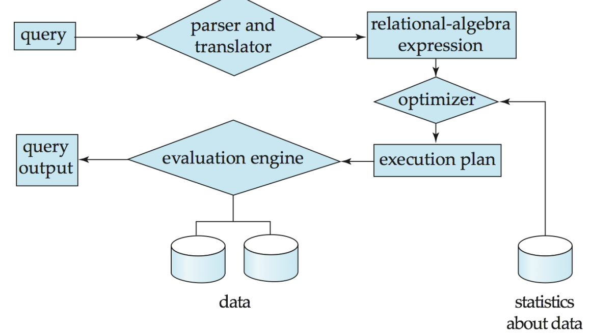
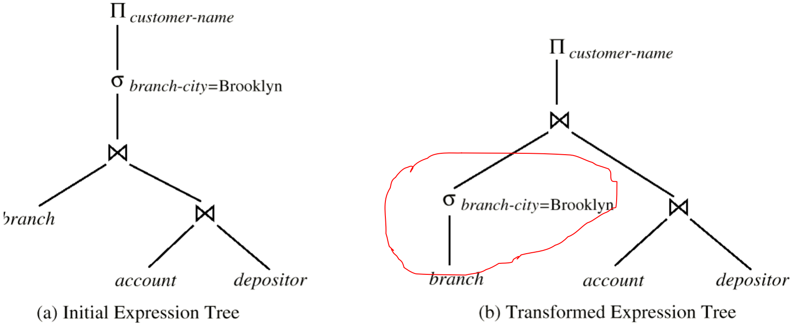
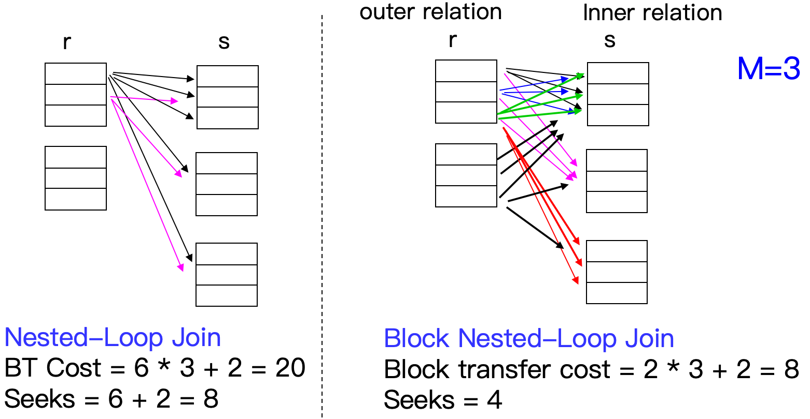
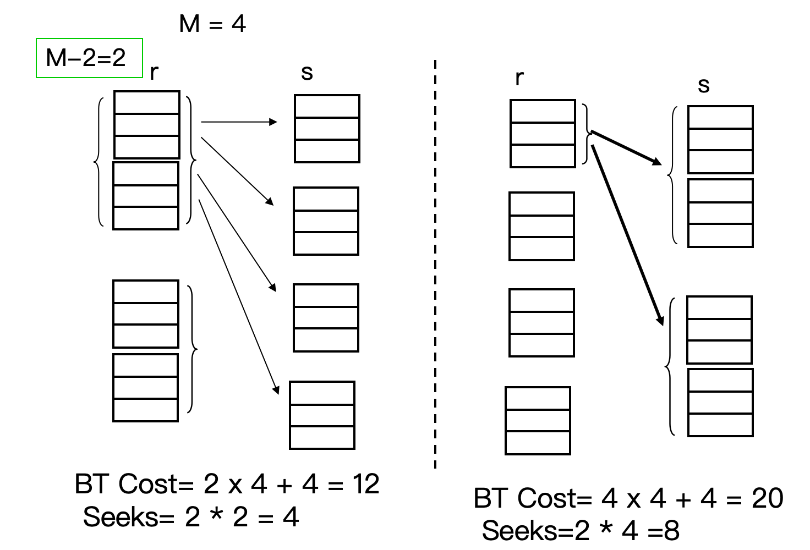
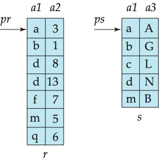
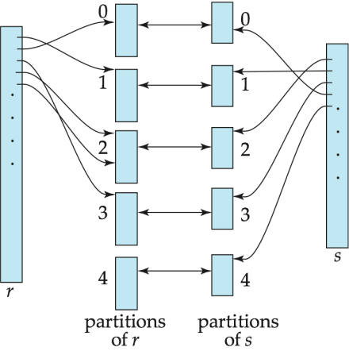

Query Processing¶
10.1 Overview¶
本讲关注 Query Processing：给定一条 SQL 查询，DBMS 如何把它翻译成内部表达式，并选择具体算法执行。
需要先记住三个背景事实：
- CPU 不能直接操作磁盘上的数据，数据必须先被读入内存。
- 磁盘容量增长速度远快于磁盘读写速度增长速度。
- 20 年内，磁盘容量可能增长约 \(1000\) 倍，但读写速度只增长约 \(40\) 倍。
- 磁盘寻道速度的提升又慢于数据传输速度的提升。
因此，查询处理的核心矛盾通常不是“CPU 算得快不快”，而是：
- 如何尽量减少磁盘 I/O，尤其是随机访问和 seek。
Basic Steps in Query Processing¶

查询处理的基本步骤：
- Parsing and translation（语法分析与翻译）
- Parser 检查 SQL 语法，并验证涉及的 relation / attribute 是否存在
- 将 SQL 翻译成内部形式，通常是 extended relational algebra（扩展关系代数, ERA）
- Optimization（查询优化）
- 对于同一个 SQL 查询，可能对应多个等价的关系代数表达式
- 同一个关系代数操作也可能有多种执行算法
- 因此 Optimizer 需要在多个可行方案中选择估计代价最低的方案
- Evaluation（执行）
- Query-execution engine 根据 query-evaluation plan 执行查询，并返回结果
Basic Steps: Optimization¶
query-evaluation plan / query-execution plan：
- 指定每个关系代数操作采用什么算法，各个操作之间如何协调执行
SELECT balance
FROM account
WHERE balance > 2500;
可能有两个等价表达式：
或：
后者通常更好，因为先选择可以减少后续投影处理的数据量。
Example

优化器考虑的两个主要因素：
- 执行算法本身的代价：例如 selection 用 linear scan 还是 index scan
- 数据库目录中的统计信息
- relation 的 tuple 数量，tuple 大小
- relation 占用的 block 数
- attribute value 的分布等
10.2 Measures of Query Cost¶
Cost is generally measured as total elapsed time for answering query.
- 查询代价一般可以理解为回答查询所需的总时间
- 影响查询时间的因素包括：Disk access + CPU cost + Network communication
这里主要估计 disk access cost：磁盘 I/O 是主要瓶颈；磁盘访问代价相对容易估算
- 磁盘代价主要由三部分组成：
- Number of seek operations performed
- Number of blocks read \(\times\) average-block-read-cost
- Number of blocks written \(\times\) average-block-write-cost
- 写 block 通常比读 block 更贵：因为写入后可能需要重新读出来，确认写入成功
Simplified Cost Model¶
为了简化，只考虑磁盘与内存之间传输了多少个 block，以及发生了多少次寻道
- \(t_T\)：transfer one block 的时间，约 \(0.1\text{ms}\)
- \(t_S\)：one seek 的时间，约 \(4\text{ms}\)
如果某个算法需要 \(b\) 次 block transfer 和 \(S\) 次 seek，则估计时间为：
- 此处不考虑 CPU cost，以及将最终结果写回磁盘的代价
Buffer and Cost Estimation¶
查询代价依赖内存 buffer 大小：
- 内存越大，需要的磁盘访问越少
- 实际可用 buffer 受并发进程和 OS 状态影响，不一定能提前准确知道
因此常用两类估计：
1. Worst case estimate：假设只有该操作所需的最小内存
2. Best case estimate：假设相关数据已经在 buffer 中，或内存足够大
10.3 Selection Operation¶
Selection operation 形如：
- 其目标是从 relation \(r\) 中找出满足条件 \(\theta\) 的 tuple
符号记录
- \(b_r\)：relation \(r\) 占用的 block 数
- \(n_r\)：relation \(r\) 中 tuple 数
- \(f_r\)：每个 block 中可容纳的 tuple 数
- \(h_i\)：index tree 的高度
- \(sc(A,r)\)：满足属性 \(A\) 上选择条件的记录数
10.3.1 Basic Algorithms¶
File scan：一种搜索算法，用于定位和检索满足特定选择条件的记录
- 它不使用索引，系统必须直接查看数据文件本身，而不是通过辅助结构来查找
A1 Linear Search¶
Linear search（线性扫描）：
- 扫描 relation 的每个 block，对每条 record 测试是否满足 selection condition
如果 selection condition 是 key attribute 上的等值查询（查询一个键属性）：
Linear search 的优点
- 不要求文件有序；不要求有索引；适用于任意 selection condition
- 一般情况下，直接在数据文件上 binary search 意义不大，因为数据块在磁盘上未必连续，而且二分会带来更多随机 seek。除非文件确实按目标属性连续排序。
A2 Binary Search¶
Binary search（二分查找）适用条件：
- selection 是 equality comparison，文件按照该属性有序存储
- 假设 relation 的 blocks 在磁盘上连续存放
- 如果查找 key attribute：
时间约为：
- 如果查找的是 non-key attribute：
- 找到第一个满足条件的 tuple 后，还要继续读包含所有匹配记录的 blocks
- 根据使用条件，匹配的记录的存储是连续的
10.3.2 Selections Using Indices and Equality¶
Index scan：使用索引定位满足条件的记录
- selection condition 必须作用在该 index 的 search key 上
A3 Primary Index, Equality on Key¶
适用场景：primary index，equality condition，并且search key 是 key attribute
其中：
- \(h_i\)：索引树高度
- \(+1\)：找到叶子后，还需要访问实际数据记录所在 block
A4 Primary Index, Equality on Nonkey¶
适用场景：primary index，equality condition，并且search key 不是 key attribute
- 会返回多条记录，但因为是 primary / clustering index，匹配记录通常位于连续 blocks 中
若匹配记录占用 \(b\) 个 blocks：\(b = \left\lceil \dfrac{sc(A,r)}{f_r} \right\rceil\) - 先沿索引树定位到第一个匹配记录，然后顺序扫描连续的数据 blocks
A5 Secondary Index, Equality on Nonkey¶
适用场景：secondary index 并且 equality condition
- 如果 search key 是 candidate key：
- 最多返回一条记录，代价类似 A3
- 如果 search key 不是 candidate key：
- 可能返回 \(n\) 条匹配记录，这些记录可能散布在不同的数据 block 中
Warning
Secondary index 在 non-key equality 上可能非常贵，因为每条匹配记录都可能触发一次随机 I/O。极端情况下甚至比 linear scan 更差。
10.3.3 Selections Involving Comparisons¶
比较查询包括：
与等值查询的不同点：返回结果通常是一个范围，结果数量可能很大
A6 Primary Index, Comparison¶
基于主索引的比较，主要分两种情况
- 此时不一定要用 index，因为文件本身按 primary search key 排序
1. 对于 \(\sigma_{A \ge V}(r)\)：
使用 primary index 找到第一个满足 \(A \ge V\) 的 tuple，然后从那里开始顺序扫描 relation
2. 对于 \(\sigma_{A \le V}(r)\)：
通常直接从 relation 开头顺序扫描，直到遇到第一个 \(A > V\) 的 tuple
A7 Secondary Index, Comparison¶
基于辅助索引的比较，主要分两种情况
- 对于 \(\sigma_{A \ge V}(r)\)：
使用 secondary index 找到第一个 \(A \ge V\) 的 index entry，然后顺序扫描 index leaf pages，获得记录指针。 - 对于 \(\sigma_{A \le V}(r)\)：
从 index leaf pages 开始扫描，直到遇到第一个 \(A > V\) 的 entry
- 然后根据指针取回实际 records。
Tip
Secondary index 的 range query 可能需要对每条结果记录做一次随机 I/O。如果返回结果很多，linear file scan 可能更便宜。
10.3.4 Complex Selections¶
Conjunction¶
A8 Conjunctive selection using one index
- 从 \(\theta_1,\dots,\theta_n\) 中选择一个代价最低、可用索引处理的条件 \(\theta_i\)
- 用 A1-A7 中合适算法取出满足 \(\theta_i\) 的 tuples
- 把结果读入内存后，再检查其他条件
A9 Conjunctive selection using composite index
- 如果存在合适的 composite index / multiple-key index，直接使用
- 例如索引键为 \((A,B)\)，查询条件为 \((A=a) \land (B=b)\) 时很有效
A10 Conjunctive selection by intersection of identifiers
前提：每个条件都有对应的 index，且 index entries 中包含 record pointers
- 分别用索引得到每个条件对应的 record pointer set，对这些 pointer sets 取交集
- 最后根据交集中的指针取回 records
- 若某些条件没有索引，则取回后在内存中检查
Disjunction¶
A10 disjunctive selection by union of identifiers：
前提：所有条件都有可用索引
- 分别用索引得到各条件对应的 record pointer set，对这些 pointer sets 取并集，再根据指针取回 records
- 如果某个条件没有索引：退化为 linear scan。
Negation¶
- 通常使用 linear scan
- 如果满足 \(\neg \theta\) 的记录非常少，并且 \(\theta\) 可用索引：
- 可以先用索引找出满足目标的记录
10.4 *Sorting¶
- Why：Sorting 的两个主要用途：
- 用户显式要求排序输出
- 某些 join 算法需要输入有序，例如 merge-join
- 可以通过索引按顺序读取 relation：
- 逻辑上是有序的，但物理上 relation 未必按该顺序连续存放
- 如果用 secondary index 顺序访问，可能每个 tuple 都要访问一个新的 disk block，代价很高
- How：
- 如果 relation 能全部放入内存：可使用 quicksort 等内存排序算法
- 如果 relation 放不进内存：使用 external sort-merge（外部排序归并）
10.4.1 External Sort-Merge¶
- \(M\)：可用内存大小，以 pages / blocks 为单位
- \(b_b\)：一次连续读/写的 block 数量
- \(b_r\)：relation \(r\) 占用的 blocks 数
Algorithm
- Step 1: Create Sorted Runs，令 \(i=0\)，重复执行：
- 读入 relation 的 \(M\) 个 blocks 到内存
- 在内存中排序这些 blocks
- 将排序后的数据写入 run \(R_i\)
- \(i \leftarrow i+1\)
- 最终生成 \(N = \left\lceil \frac{b_r}{M} \right\rceil\) 个初始 runs
- Step 2: Merge Runs
- 如果 \(N < M\)：
- 使用 \(N\) 个 input buffers
- 使用 \(1\) 个 output buffer
- 对 \(N\) 个 runs 做一次 \(N\) -way merge
- 如果 \(N \ge M\)：
- 一次最多合并 \(M-1\) 个 runs，因为还需要 1 个 output buffer
- 每一轮 merge pass 会把 runs 数量减少约 \(M-1\) 倍
- 重复 merge passes，直到所有 runs 合并为一个
- 如果 \(N < M\)：
10.4.2 Cost of External Merge Sort¶
Block transfer:
- 在 merge 阶段需要的轮数 \(P\) 为：
- Initial run creation 和每一轮 merge pass 都需要完整读+写一遍数据：
- 因此每轮大约 \(2b_r\) block transfers
- 但 final pass 的输出通常不计写回磁盘的代价，因为可以直接传给父操作
- 因此 block transfers：
Seek cost：
- Run generation 阶段：
- 每次：seek → 连续读 \(M\) blocks → 内部排序 → seek → 连续写 \(M\) blocks
- 一共 \(2 \lceil \dfrac{b_r}{M} \rceil\) 个 run，每个 run 读写各一次 seek
- Merge 阶段，设一次连续读写 \(b_b\) 个 blocks：
- 每轮 merge 需要读全部 \(b_r\) 个 blocks + 写全部 \(b_r\) 个 blocks
- 每个轮读写各一次 seek，但最后一轮不用写，省掉一轮 seek
- 总 seek 数：
10.5 Join Operation¶
Join 是查询处理中代价最高、也最重要的操作之一
符号定义
- \(r\)：outer relation
- \(s\)：inner relation
- \(b_r,b_s\)：两个 relation 的 block 数
- \(n_r,n_s\)：两个 relation 的 tuple 数
- \(M\)：可用内存 blocks 数
10.5.1 Nested-Loop Join¶
用于计算 theta join：\(r \bowtie_\theta s\)
for each tuple tr in r:
for each tuple ts in s:
if (tr, ts) satisfy theta:
output tr concat ts
- 不需要索引，可以用于任意 join condition
- 代价很高，因为要检查所有 tuple pairs
Worst case：
- 假设：
- 内存只能容纳每个 relation 的一个 block
- 对 \(r\) 中每个 tuple，都需要扫描一次 \(s\)
- 损失分析：
- block transfers：\(n_r \cdot b_s + b_r\)
外部自身需要 transfer \(b_r\) 个 block，每个 tuple 去访问内部时进行 \(b_s\) 次 tansfer - seeks：\(n_r + b_r\)
- \(b_r\)：读外层的每个 block 需要 1 次 seek（内存只能装 1 个 block，逐 block 读）
- \(n_r\)：对外层每条 tuple，要重新 seek 回的起始位置开始扫描
- block transfers：\(n_r \cdot b_s + b_r\)
关于 seek 的分析
| 次数 | 原因 | |
|---|---|---|
| 内层扫描 | 每轮 1 次 seek | 的 blocks 连续存放，读完一个紧接着下一个，顺序 I/O |
| 外层读取 | 每个 block 1 次 seek | 每次读的下一个 block 之前，磁头已经被扫描带到了远处，必须 seek 回来 |
本质：不是"读几个 block 就要几次 seek"，而是访问是否连续。连续读 100 个 block 也只要 1 次 seek；但如果中间被打断（比如去扫描了别的东西），每次回来都要重新 seek。
Best case：如果较小 relation 能全部放入内存，并作为 inner relation：
Tip
Nested-loop join 的 worst case 中，通常让 tuple 数更少的 relation 作为 outer relation；
如果某个 relation 能完整放入内存，则更适合作为 inner relation
10.5.2 Block Nested-Loop Join¶

Block nested-loop join 是 nested-loop join 的改进：
- 对 outer relation 的每个 block 扫描 inner relation
for each block Br of r:
for each block Bs of s:
for each tuple tr in Br:
for each tuple ts in Bs:
if (tr, ts) satisfy theta:
output tr concat ts
Cost Analysis
- Worst Case
- block transfers: \(b_r \cdot b_s + b_r\)
- seeks：\(2b_r\)
- Best Case (\(s\) 始终在内存)
- block transfers: \(b_r + b_s\)
- seeks：\(2\)
因此在 worst case 下，应让 block 数较小的 relation 作为 outer relation
Improvements¶
(1) when \(M > 3\), but \(M < b_s\) and \(M < b_r\)
- 可以用 \(M-2\) 个 blocks 存放 outer relation 的一批 blocks
- 剩下两个 block 分别作为 inner relation buffer 和 output buffer

Cost Analysis
- block transfers：\(\left\lceil \frac{b_r}{M-2} \right\rceil b_s + b_r\)
- seeks：\(2\left\lceil \frac{b_r}{M-2} \right\rceil\)
这种做法能把读取 inner relation 的次数大约减少 \(M-2\) 倍
(2) 如果等值连接（equi-join）属性在内层关系上构成键（key），则在第一次匹配时停止内层循环
(3) 内层扫描可以交替正向/反向进行，同时可以采取 LRU 策略利用仍留在 buffer 中的 blocks
(4) 如果 inner relation 的 join attribute 上有 index，可以改用 indexed nested-loop join（下面会具体介绍）
10.5.3 Indexed Nested-Loop Join¶
适用条件：
- 连接必须是等值连接（Equi-join）或自然连接
- 内层表（Inner Relation）的 join attribute 上必须有索引
对 outer relation \(r\) 的每个 tuple \(t_r\)：
- 使用 inner relation \(s\) 上的 index，找出所有与 \(t_r\) 满足 join condition 的 \(s\) tuples
Worst Case Cost Analysis
- 假设：
- buffer 只能容纳 outer relation 的一个 page
- 每个 outer tuple 都要对 inner relation 做一次 index lookup
- 开销：
- 加号前的部分是针对 outer relation 的 tranfer 以及 seek 的开销
- ⚠️索引查找完之后，磁头已经移动到 $s$ 的位置，再 transfer $r$ 时需要 seek
- 其中 $c$ 是对 $s$ 执行一次基于 join condition 的 indexed selection 的代价
- 如果 \(r\) 和 \(s\) 的 join attributes 上都有索引：选择 tuple 数较少的 relation 作为 outer relation
Example
若 outer relation 有 \(5000\) 个 tuples，inner relation 的 B+ tree 查找一次需要访问 \(5\) 个 blocks，则 indexed nested-loop join 大约需要 \(b_{\text{outer}} + 5000 \times 5\) 次 block access。它通常比普通 nested-loop join 少很多 I/O。
10.5.4 Merge-Join¶
Merge-join（排序归并连接） 适用于：equi-join & natural join
- 如果两个 relation 尚未按 join attribute 排序，先排序
- 对两个有序 relation 做类似 merge 的扫描
- 对 join attribute 相同的 tuple group，输出所有匹配组合

假设对于 join 属性的任何一个给定值，所有与之匹配的 tuple 都能放入内存：
- 如果 relation 未排序，还要加上排序代价
Hybrid Merge-Join¶
假设：一个 relation 已经排序，另一个 relation 在 join attribute 上有 secondary B+ tree index
思路：
- 将已排序 relation 与 B+ tree 的 leaf entries 合并（按值匹配）
- 将合并结果按物理地址排序
- 按物理地址顺序扫描未排序 relation，将地址替换为实际 tuple
- 这样可以避免大量随机 lookup，尽量转化为顺序扫描
10.5.5 Hash-Join¶
Hash-join（哈希连接） 适用于：equi-join & natural join
核心思想：两个 relation 太大无法直接在内存中 join，那就先用 hash 分区，把大问题拆成多个小问题，每个小问题都能在内存中完成。
- 使用 hash function \(h\) 按 join attribute 将两个 relation 分成多个 partition
- 设：\(h: \text{JoinAttrs} \rightarrow \{0,1,\dots,n\}\)
- 将 \(r\) 分成：\(r_0,r_1,\dots,r_n\)，将 \(s\) 分成：\(s_0,s_1,\dots,s_n\)
- 若 \(t_r\) 与 \(t_s\) 满足 join condition，则它们 join attribute 值相同，因此一定被 hash 到同一个 \(i\)，只需比较 \(r_i\) 与 \(s_i\)
- 只有落在同一个 partition 中的 tuples 才可能匹配
Hash-Join Algorithm¶

\(s\) 被称为 build input，\(r\) 被称为 probe input
- 使用 hash function \(h\) 对 build relation \(s\) 分区
- 使用同一个 \(h\) 对 probe relation \(r\) 分区
- 对每个 partition \(i\)：
- 将 \(s_i\) 读入内存，在 \(s_i\) 上基于 join attribute 建立内存 hash index
- 顺序读取 \(r_i\)，对 \(r_i\) 中每个 tuple，查刚刚建立的 hash index，输出匹配结果
Tip
build input 的每个 partition \(s_i\) 应该能够放入内存；
probe input 的 partition \(r_i\) 不要求放入内存。
通常 partition 数选择为：
其中 \(f\) 是 fudge factor，通常约为 \(1.2\)，用来降低分区溢出的概率
Recursive Partitioning¶
如果 partition 数 \(n\) 大于内存页数 \(M\)：不能一次性为每个 partition 分配 output buffer
- 改为一次使用 \(M-1\) 个 partitions
- 对分区继续用新的 hash function 递归分区
- 对 \(r\) 和 \(s\) 必须使用相同的分区方式
*Handling of Overflows¶
Hash-table overflow 发生在 build partition \(s_i\) 无法放入内存时，常见原因如下：
- join attribute 上大量 tuples 取相同值
- hash function 分布不好
- partitioning skewed，部分 partition 远大于其他 partition
解决方法：
- Overflow resolution
- 对溢出的 partition 用另一个 hash function 继续分区
- 对应的 probe partition 也必须相同方式分区
- Overflow avoidance
- 在 build phase 更谨慎地分区，例如先分成更多 partitions，再合并合适的小 partitions
- 如果重复值极多，上述方法失败：
- 对溢出部分退化使用 block nested-loop join
10.5.6 Cost of Hash-Join¶
如果不需要 recursive partitioning：
- 分区时读写 partition：
- Transfer：读 + 写 = \(2(b_r+b_s)\)
- Seek：每次连续读/写 \(b_b\) 个 blocks 需要 \(1\) 次 seek，读写各 \(\lceil \dfrac{b_r}{b_b} \rceil+ \lceil \dfrac{b_s}{b_b} \rceil\) 次
- 建立 hash table：\(\text{Cost of transfer}= b_s\)
- Probe (寻找匹配的值)：\(\text{Cost of transfer}= b_r\)
- 其中：
- \(n_h\) 是 partition 数（修正项，partition 填不满的碎片 blocks）
- \(4n_h\) 近似表示 partially filled partition blocks 带来的额外 I/O
如果需要 recursive partitioning：
- build relation \(s\) 的 partitioning passes 数为：\(\left\lceil \log_{M-1}(b_s) - 1 \right\rceil\)
- 总 block transfers：
- seek 数：
如果整个 build input 都能放入内存（best case）：
10.5.7 *Hybrid Hash-Join¶
Hybrid hash-join 适用于：内存相对较大，build input 仍然大于内存
普通的 Hash Join：
- 分区阶段：把表 R 和 S 分成 N 个小包，全部写入磁盘。
- 构建/探测阶段：再把这 N 个小包从磁盘读回内存进行匹配
Hybrid Hash-Join：
- 分区阶段（Partitioning Phase）
- 对于哈希值为 0 的那部分数据，直接留在内存里，不写磁盘
- 对于哈希值为 1 到 N-1 的数据，因为内存装不下了，所以写入磁盘
- 探测阶段（Probing Phase）
这时内存以及存在一个现成的 Partition 0 的哈希表- 开始扫描表 S（Probe Input）
- 遇到属于 Partition 0 的元组：直接拿它跟内存里现成的表进行匹配（Probe）
- 遇到属于 1 到 N-1 的元组：先写入磁盘，等后面再处理
因此可以减少一部分 partition 的写盘和读盘代价
10.5.8 Complex Joins¶
对于 conjunctive join：
可以：
- 使用 nested-loop / block nested-loop 直接检查完整条件
- 或先计算其中一个简单 join：\(r \bowtie_{\theta_i} s\)，再检查剩余条件： \(\theta_1 \land \dots \land \theta_{i-1} \land \theta_{i+1} \land \cdots \land \theta_n\)
对于 disjunctive join：
可以：
- 使用 nested-loop / block nested-loop 直接检查完整条件
- 或分别计算：\((r \bowtie_{\theta_1} s)\cup(r \bowtie_{\theta_2} s)\cup\cdots\cup(r \bowtie_{\theta_n} s)\)
10.6 *Other Operations¶
10.6.1 Duplicate Elimination¶
Duplicate elimination 可以通过 sorting 或 hashing 实现
- Sorting 方法：
- 排序后重复的 tuples 会相邻；保留一份，删除其余重复项
- 优化：在 run generation 和 intermediate merge 阶段就可以提前删除重复项。
- Hashing 方法：
- 重复 tuples 会进入同一个 bucket，在 bucket 内去重
10.6.2 Projection¶
Projection 的实现：
- 对每个 tuple 执行投影
- 如果关系代数语义要求集合结果，则执行 duplicate elimination
SQL 中如果没有 DISTINCT
SELECT默认保留重复行- 不一定需要 duplicate elimination
10.6.3 Aggregation¶
Aggregation 与 duplicate elimination 类似：
- 使用 sorting 或 hashing 将同组 tuples 放在一起
- 对每个 group 应用 aggregate functions
可在 run generation 和 intermediate merge 阶段做 partial aggregation：
- 对
count：保存当前计数，合并时相加。 - 对
sum：保存部分和，合并时相加。 - 对
min/max：保存当前最小/最大值。 - 对
avg：保存sum和count，最后再计算：\(\text{avg} = \dfrac{\text{sum}}{\text{count}}\)
10.6.4 Set Operations¶
集合操作包括：
可以通过：
- sorting 后使用 merge-join 的变体
- hashing 后使用 hash-join 的变体
Hashing 实现思路：
- 用相同 hash function 分区两个 relation：\(r_0,\dots,r_n\) 和 \(s_0,\dots,s_n\)
- 对每个 partition \(i\)：
- 将 \(r_i\) 读入内存
- 使用另一个 hash function 建立内存 hash index
- 处理 \(s_i\)
对于 union：
- 若 \(s_i\) 中 tuple 不在 hash index 中，则加入
- 最后输出 hash index 中所有 tuples
对于 intersection：
- 若 \(s_i\) 中 tuple 已在 hash index 中，则输出
对于 difference \(r-s\)：
- 对每个 \(s_i\) 中 tuple，若其在 hash index 中，则删除
- 最后输出 hash index 中剩余 tuples
10.6.5 Outer Join¶
Outer join 可以通过两类方式计算：
- 先做普通 join，再添加用 null padding 的未匹配 tuples
- 修改 join algorithm，使其在 join 过程中输出未匹配 tuples
以 left outer join 为例：
如果修改 merge-join：
- 对每个来自 \(r\)、没有匹配 \(s\) tuple 的 tuple \(t_r\)：输出 \(t_r\) 并在 \(s\) 的属性位置填充 null
如果修改 hash-join：
- 若 \(r\) 是 probe relation：
- probe 时发现没有匹配，就输出 null padded tuple
- 若 \(r\) 是 build relation：
- probing 时记录哪些 \(r\) tuples 被匹配过
- 最后输出未匹配的 \(r\) tuples，并补 null
Right outer join 和 full outer join 可类似处理
10.7 *Evaluation of Expressions¶
前面讨论的是单个关系代数操作的实现。实际查询通常是一棵 expression tree，例如：
完整表达式的执行方式主要有两类：
- Materialization
- Pipelining
10.7.1 Materialization¶
Materialized evaluation（实体化执行）：
- 从表达式树的最低层开始，一次执行一个操作；
- 每个操作的中间结果都存储为临时 relation，上层操作再读取临时 relation 继续计算
优点：总是适用，实现简单
缺点：中间结果需要写入磁盘，再读回，代价可能很高
- 整体代价：\(\text{sum of individual operation costs}+\text{cost of writing intermediate results to disk}\)
Improvement: Double Buffering
- 每个操作使用两个 output buffers：
- 一个 buffer 满了就写磁盘
- 另一个 buffer 继续接收输出
- 这样可以重叠磁盘写入与计算，减少执行时间
10.7.2 Pipelining¶
Pipelined evaluation（流水线执行）：
- 多个操作同时执行，一个操作产生的 tuple 不写成临时 relation，而是直接传给父操作
优点：避免中间结果写盘，通常比 materialization 便宜
限制：并非所有操作都能流水线化；依赖父操作类型、输出是否需要排序、算法能否边读边产生输出等
流水线执行需要选择能逐步产生输出的算法：
- File scan 可以自然地产生 tuple stream
- Selection / projection 通常适合 pipeline
- Sort、merge join、hash join 等 blocking 操作则不总是适合
Demand-Driven Pipelining¶
Demand-driven / lazy evaluation（需求驱动 / 惰性执行）：
- 系统从顶层 operator 反复请求 next tuple
- 每个 operator 为了产生下一个 tuple，会向其 child operators 请求 tuple
- 每个 operator 需要维护自己的执行状态
通常用 iterator（迭代器） 模型实现：
Open()：初始化 operator 状态，例如 file scan 将文件指针放到开头Next()：返回下一个输出 tuple，更新内部状态Close()：释放资源
Producer-Driven Pipelining¶
Producer-driven / eager pipelining（生产者驱动 / 急切执行）：
- child operator 主动产生 tuples，并放入父操作的 buffer
- parent operator 从 buffer 中取 tuples
- 如果 buffer 满，child operator 等待
- 系统调度那些 output buffer 有空间、且仍可处理输入的 operators
Evaluation Algorithms for Pipelining¶
有些算法不能一边接收输入一边输出结果：
- External sort 通常需要先读完并排序
- Merge join 通常需要有序输入
- Hash join 需要先构建 build input 的 hash table 或 partitions
但可使用变体产生部分流水线效果：
- Hybrid hash join 可以对保留在内存中的 partition 立即输出匹配结果
- Double-pipelined join 可以同时缓存两个 relation 的 partition 0：
- 新的 \(r_0\) tuple 到来时，与已有 \(s_0\) tuples 匹配并输出
- 新的 \(s_0\) tuple 到来时，与已有 \(r_0\) tuples 匹配并输出
10.7.3 Multiway Join and Example¶
Multiway Join¶
对于三个 relation 的 join：
可能策略：
- 先计算：
再与 loan join。
- 先计算：
再与 customer join。
- 将多个 join 合成一个 special-purpose operation：
- 在
loan.loan-number上建索引。 - 在
customer.customer-name上建索引。 - 对
depositor中每个 tuple，分别查找对应的loan和customertuples。 - 每个
depositortuple 只检查一次。
- 在
第三种方法把两个二元 join 合并成一个更专用的操作，可能比逐个执行两个 join 更高效。
Example¶
给定：
T1(bno, type, title, press, year)
T2(id, bno, date1, date2)
其中：
T2.bno是引用T1.bno的 foreign key。- \(T1\) 有 \(20,000\) 个 tuples。
- \(T2\) 有 \(45,000\) 个 tuples。
- \(T1\) 每 block 放 \(25\) 个 tuples。
- \(T2\) 每 block 放 \(30\) 个 tuples。
- \(T1\) 在 primary key
bno上有 primary B+ tree index。 - B+ tree 每个 index node 最多 \(60\) 个 entries。
- 使用 worst case memory assumption。
先计算 block 数：
B+ tree 高度近似：
Block Nested-Loop Join¶
让 \(T1\) 作为 outer relation：
block transfers。
seeks：
Indexed Nested-Loop Join¶
让 \(T2\) 作为 outer relation，\(T1\) 作为 inner relation：
- 对 \(T2\) 中每个 tuple，用
bno查 \(T1\) 的 primary B+ tree index。 - 每次索引查找需要约 \(3+1\) 次 block access。
block transfers：
seeks 约为：
Warning
课件例子最后一行写作 18150，但按给定公式 \(45000 \times 4 + 1500\) 应为 \(181500\)。另外 block nested-loop join 若按 \(T1\) 作 outer relation，seek 数应为 \(2 \times 800\)。这里按公式保留正确数量级。